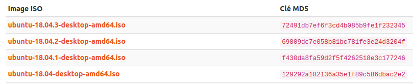
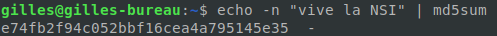

Dictionnaires⚓︎

Préambule : retour sur le cours de Première.
0. Notion de tableau associatif⚓︎
Un tableau associatif est un type abstrait de données (au même titre que les listes, piles, files, vues précédemment). Ce type abstrait de données a la particularité de ne pas être totalement linéaire (ou «plat») puisqu'il associe des valeurs à des clés.
Il est habituellement muni des opérations suivantes :
- ajout d'une nouvelle valeur associée à une nouvelle clé (on parlera de nouveau couple clé-valeur)
- modification d'une valeur associée à une clé existante
- suppression d'un couple clé-valeur
- récupération de la valeur associée à une clé donnée.
Un répertoire téléphonique est un exemple de tableau associatif :
- les clés sont les noms
- les valeurs sont les numéros de téléphone
En Python, le dictionnaire est une structure native de tableau associatif.
1. Dictionnaire et temps d'accès aux données⚓︎
TP : protocole de test pour comparer les temps d'accès aux données.
Indication : on utilisera la fonction time.time() (après avoir importé le module time) qui donne le nombre de secondes (à \(10^{-7}\) près) écoulées depuis le 01 janvier 1970 à 00h00 (appelée Heure Unix ou Temps Posix).
>>> import time
>>> time.time()
1639001177.0923798
1.1 Préparation des mesures⚓︎
Considérons deux fonctions fabrique_liste() et fabrique_dict() capables de fabriquer respectivement des listes et des dictionnaires de taille donnée en paramètre.
def fabrique_liste(nb):
lst = [k**2 for k in range(nb)]
return lst
def fabrique_dict(nb):
dct = {}
for k in fabrique_liste(nb):
dct[k] = 42
return dct
>>> lst = fabrique_liste(10)
>>> dct = fabrique_dict(10)
>>> lst
[0, 1, 4, 9, 16, 25, 36, 49, 64, 81]
>>> dct
{0: 42, 1: 42, 4: 42, 9: 42, 16: 42, 25: 42, 36: 42, 49: 42, 64: 42, 81: 42}
Le contenu de ces listes ou dictionnaires n'a pas grand intérêt. Dans nos mesures, on y cherchera une valeur qui n'y figure pas : la chaîne de caractères "a". On dit qu'on se place dans le pire des cas.
1.2 Mesures des temps de recherche⚓︎
1.2.1 Temps de recherche pour les listes⚓︎
- avec 10 valeurs :
lst = fabrique_liste(10)
%timeit "a" in lst
138 ns ± 0.054 ns per loop (mean ± std. dev. of 7 runs, 10000000 loops each)
Nous sommes donc à l'ordre de grandeur \(100 \times 10^{-9}\), soit \(10^{-7}\) secondes.
- avec 100 valeurs :
lst = fabrique_liste(100)
%timeit "a" in lst
1.11 µs ± 1.54 ns per loop (mean ± std. dev. of 7 runs, 1000000 loops each)
Nous sommes donc à l'ordre de grandeur \(1 \times 10^{-6}\), soit \(10^{-6}\) secondes.
- avec 1000 valeurs :
lst = fabrique_liste(1000)
%timeit "a" in lst
11.2 µs ± 41.8 ns per loop (mean ± std. dev. of 7 runs, 100000 loops each)
Nous sommes donc à l'ordre de grandeur \(10 \times 10^{-6}\), soit \(10^{-5}\) secondes.
Conclusion : le temps de recherche d'une valeur dans une liste est directement proportionnel à la longueur de cette liste. On dit qu'il est linéaire, ou bien qu'il est en \(O(n)\).
1.2.2 Temps de recherche pour les dictionnaires⚓︎
On va rechercher si "a" est une clé valide pour notre dictionnaire.
- avec 10 valeurs :
dct = fabrique_dict(10)
%timeit "a" in dct
31.2 ns ± 0.221 ns per loop (mean ± std. dev. of 7 runs, 10000000 loops each)
Nous sommes donc à l'ordre de grandeur \(10 \times 10^{-9}\), soit \(10^{-8}\) secondes.
- avec 100 valeurs :
dct = fabrique_dict(100)
%timeit "a" in dct
31.2 ns ± 0.233 ns per loop (mean ± std. dev. of 7 runs, 10000000 loops each)
Nous sommes donc toujours à l'ordre de grandeur \(10 \times 10^{-9}\), soit \(10^{-8}\) secondes.
- avec 10000 valeurs :
dct = fabrique_dict(10000)
%timeit "a" in dct
33.9 ns ± 0.168 ns per loop (mean ± std. dev. of 7 runs, 10000000 loops each)
On retrouve avec 10000 valeurs le même temps de recherche qu'avec 10 valeurs.
On remarque donc que le temps moyen est remarquablement constant. Il ne dépend pas du nombre d'éléments du dictionnaire dans lequel on cherche. On dit qu'il est en \(O(1)\).
Temps de recherche 
Il y a donc une différence fondamentale à connaître entre les temps de recherche d'un éléments à l'intérieur :
- d'une liste : temps proportionnel à la taille de la liste.
- d'un dictionnaire : temps constant, indépendant de la taille de la liste.
Attention : en ce qui concerne les temps d'accès à un élément, la structure de tableau dynamique des listes de Python fait que ce temps d'accès est aussi en temps constant (comme pour les dictionnaires). On voit alors que les listes Python ne sont pas des listes chaînées, où le temps d'accès à un élément est directement proportionnel à la position de cet élément dans la liste.
1.3 Fonctions de hachage (hors-programme)⚓︎
Tout ce qui suit est hors-programme de Terminale, mais permet de comprendre comment Python arrive à faire de la recherche en temps constant quelle que soit la taille du dictionnaire.
Il est important de se rappeler qu'un dictionnaire n'est pas ordonné (contrairement à l'objet «dictionnaire» de la vie courante, où chaque mot est classé suivant l'ordre alphabétique).
On n'accède pas à une valeur suivant sa position, mais suivant sa clé.
Dans une liste, lorsqu'on veut savoir si un élément appartient à une liste (problème de la recherche d'élément), il n'y a pas (dans le cas général) de meilleure méthode que le parcours exhaustif de tous les éléments de la liste jusqu'à (éventuellement) trouver la valeur cherchée.
Dans un dictionnaire, on pourrait s'imaginer qu'il va falloir parcourir toutes les clés et regarder les valeurs correspondantes. Il n'en est rien.
Pour comprendre cela nous allons faire un petit détour par les fonctions de hachage.
Les fonctions de hachage
Lorsque vous téléchargez un fichier important et que vous souhaitez vérifier qu'il n'a pas été corrompu lors du téléchargement (ou avant), vous avez parfois la possibilité de vérifier l'intégrité de votre fichier téléchargé, en calculant une «empreinte» de votre fichier et en la comparant avec celle que vous êtes censée obtenir :
Voilà par exemple ce qui apparaît sur la page de téléchargement d'une iso d'ubuntu 18.04 :

La clé MD5 proposée pour chaque fichier est le résultat ce que doit donner le fichier (ici une iso d'environ 1,9 Go) lorsqu'il est «haché» par la fonction MD5. Dans notre cas, si nous téléchargeons
ubuntu-18.04.3-desktop-amd64.iso, nous devons calculer l'empreinte du fichier téléchargé et vérifier que nous obtenons bien 72491db7ef6f3cd4b085b9fe1f232345 :
Essayons :

La clé calculée sur l'ordinateur correspond bien à celle indiquée sur le site de téléchargement : le fichier est intègre.
Que fait la fonction de hachage MD5 ?

Quelle que soit la taille du fichier donné en entrée, la fonction MD5 va le réduire à un mot de 128 bits. Ce mot binaire de 128 bits est représenté par une chaîne de 32 caractères (en hexadécimal, de 0 à f). Il y a donc \(2^{128}\) (de l'ordre de \(10^{39}\)) empreintes MD5 différentes, ce qui rend quasiment impossible le fait d'avoir un mauvais fichier qui donnerait (par un très très mauvais hasard) la bonne empreinte.
Le mécanisme effectif de calcul de la fonction MD5 est très complexe : une explication en est donnée ici{:target="_blank".
Il est évidemment impossible de revenir en arrière et de recréer le fichier original à partir de l'empreinte MD5. Dans le cas contraire, cela voudrait dire qu'on est capable de compresser sans perte un fichier de 1,9 Go en une chaîne de 128 bits. Cette impossibilité de trouver une fonction réciproque à la fonction de hachage est très importante en cryptographie.
En effet, les simples chaînes de caractères peuvent aussi être transformées par une fonction de hachage :


Quel est l'intérêt de hacher une chaîne de caractère ? La conservation des mots de passe !
Stockage des mots de passe sur un serveur
Les sites qui nécessitent une authentification par login / mot de passe ne conservent pas en clair les mots de passe sur leur serveur. La moindre compromission de leur serveur serait en effet dramatique. Ce qui est conservé est l'empreinte du mot de passe après son passage par une fonction de hachage.
Par exemple, un site où notre mot de passe serait vive la NSI conserverait dans ses bases de données l'empreinte e74fb2f94c052bbf16cea4a795145e35.
À chaque saisie du mot de passe côté client, l'empreinte est recalculée (toujours côté client, afin de ne pas faire transiter le mot de passe en clair), puis comparée au niveau du serveur avec l'empreinte stockée.
De cette façon, si les communications entre le client et le serveur sont interceptées, ou bien si le serveur est compromis, le non-réversibilité de la fonction de hachage assure que le mot de passe ne peut pas être retrouvé par les attaquants.
Non-réversibilité de la fonction de hachage, vraiment ?
Prenons l'empreinte MD5 bdc87b9c894da5168059e00ebffb9077 et allons fureter du côté de (par exemple) https://md5.gromweb.com/
Notre empreinte ne résiste pas bien longtemps...
Re-essayons alors avec l'empreinte e74fb2f94c052bbf16cea4a795145e35.
Les empreintes des mots de passe les plus fréquents sont stockées dans des tables (qu'on appelle rainbow tables ou tables arc-en-ciel) qui rendent possibles le déchiffrage de ces empreintes.
Pour contrer cela, les cryptographes rajoutent des caractères avant hachage (le sel), et choisissent surtout des bonnes fonctions de hachage. MD5 et SHA-1 ne sont plus utilisées, on préfère maintenant SHA-256 (voir ici).
1.4 Retour aux dictionnaires⚓︎
En quoi les fonctions de hachage ont-elles un rôle à jouer dans l'implémentation d'un dictionnaire ?
L'idée essentielle est que chaque clé est hachée pour donner une empreinte unique, qui est ensuite transformée en un indice de positionnement dans un tableau.
Le dictionnaire :
d = {"pommes":3, "poires":0, "bananes":5}
serait donc par exemple implémenté dans un tableau comme celui-ci :

On peut remarquer que ce tableau laisse beaucoup de cases vides (pour plus de renseignements, voir https://www.jessicayung.com/how-python-implements-dictionaries/ )
Si je souhaite ensuite accéder à l'élément d["kiwis"] :
- le hash de la chaîne
"kiwis"est calculé. Par exemple,4512d2202. - l'indice de la position (éventuelle) de la clé
"kiwis"dans mon dictionnaire est calculé à partir de ce hash4512d2202. Dans notre exemple, cela pourrait donner l'indice 3. - Python accède directement à cet indice du tableau :
- si la valeur de la clé sur cette ligne du tableau est None, cela signifie que
"kiwis"n'est pas une clé existante du tableau. C'est notre cas ici car il n'y a rien à la ligne 3. - si la valeur de la clé sur cette ligne du tableau est bien
"kiwis", la valeur correspondante est renvoyée.
- si la valeur de la clé sur cette ligne du tableau est None, cela signifie que
En résumé, Python sait toujours où aller chercher un élément de son dictionnaire : soit il le trouve à l'endroit calculé, soit il n'y a rien à cet endroit calculé, ce qui veut dire que l'élément ne fait pas partie du dictionnaire.
Par ce mécanisme, l'accès à un élément du dictionnaire se fait toujours en temps constant.
Il existe une manière de «voir» que Python utilise une fonction de hachage pour implémenter un dictionnaire :
mondico = {}
# un nombre peut-il être une clé?
mondico[4] = "foo"
# une chaîne de caractères peut-elle être une clé ?
mondico["riri"] = "fifi"
# une liste peut-elle être une clé ?
mondico[[2,5]] = "loulou"
---------------------------------------------------------------------------
TypeError Traceback (most recent call last)
<ipython-input-1-585560b5c422> in <module>
8
9 # une liste peut-elle être une clé ?
- 10 mondico[[2,5]] = "loulou"
TypeError: unhashable type: 'list'
Le message d'erreur est explicite : le type list que nous avons voulu utiliser comme clé n'est pas hachable, car c'est un type d'objet pouvant être modifié a posteriori tout en gardant la même référence (on dit que c'est un objet mutable):
a = [3, 6, 8]
print(id(a))
a.append(12)
print(id(a))
139646950377032
139646950377032
Ce changement de valeur tout en gardant la même référence détruirait le principe associant à une clé unique une position unique dans le tableau implémentant le dictionnaire.
Ce problème ne se pose pas si la variable désigne une chaîne de caractères, ou un nombre :
a = 2020
print(id(a))
a += 1
print(id(a))
139646916523440
139646916523504
Un variable contenant un entier est donc un objet immuable car si on modifie la valeur de l'entier, la référence de la variable changera aussi. Comme un dictionnaire a besoin d'avoir des clés dont les références soient définitives, seuls les objets immuables peuvent donc servir de clés dans les dictionnaires.